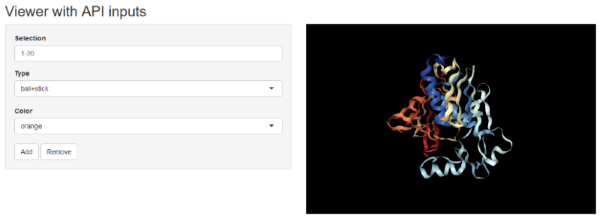

Installation
NGLVieweR is available through GitHub
install.packages("remotes")
remotes::install_github("nvelden/NGLVieweR")Loading PDB files
You can load a PDB (or and other supported format) directly or use a PDB code of a structure on RCSB.org. The below minimal example loads the PDB file and displays the structure in a “cartoon” representation.
#Load local pdb file
NGLVieweR("C:/7CID.pdb") %>%
addRepresentation("cartoon")
#Load protein by PDB code
NGLVieweR("7CID") %>%
addRepresentation("cartoon")Note: Use mouse for selection (left-click), rotate/move (left/right-click hold) and zooming (scroll wheel).
You can view a “basic” NGLVieweR Shiny application by running the below code. Use “API” for an example using API calls or any of the function names (e.g “addSelection”“) for function specific examples.
library(NGLVieweR)
library(shiny)
NGLVieweR_example("basic") Loading other structural files
This package has been developed and tested using PDB files but supports loading of any of the following structural files: .mmcif, .cif, .mcif, .ent, .pqr, .gro, .sdf, .sd, .mol2 and .mmtf.
By default NGLVieweR guesses the file format from
the file extension. Use the format parameter in case no or
the wrong file extension is provided.
#Note that line formatting needs to be exact when reading from console!
benz <- "
702
-OEChem-02271511112D
9 8 0 0 0 0 0 0 0999 V2000
0.5369 0.9749 0.0000 O 0 0 0 0 0 0 0 0 0 0 0 0
1.4030 0.4749 0.0000 C 0 0 0 0 0 0 0 0 0 0 0 0
2.2690 0.9749 0.0000 C 0 0 0 0 0 0 0 0 0 0 0 0
1.8015 0.0000 0.0000 H 0 0 0 0 0 0 0 0 0 0 0 0
1.0044 0.0000 0.0000 H 0 0 0 0 0 0 0 0 0 0 0 0
1.9590 1.5118 0.0000 H 0 0 0 0 0 0 0 0 0 0 0 0
2.8059 1.2849 0.0000 H 0 0 0 0 0 0 0 0 0 0 0 0
2.5790 0.4380 0.0000 H 0 0 0 0 0 0 0 0 0 0 0 0
0.0000 0.6649 0.0000 H 0 0 0 0 0 0 0 0 0 0 0 0
1 2 1 0 0 0 0
1 9 1 0 0 0 0
2 3 1 0 0 0 0
2 4 1 0 0 0 0
2 5 1 0 0 0 0
3 6 1 0 0 0 0
3 7 1 0 0 0 0
3 8 1 0 0 0 0
M END
> <ID>
00001
> <DESCRIPTION>
Solvent produced by yeast-based fermentation of sugars.
$$$$
"
NGLVieweR(benz, format="sdf") %>%
addRepresentation("ball+stick")Representations
You can load the structure as a “cartoon”, “ball+stick”, “line”,
“surface”, “ribbon”, or any other representation listed in the NGL.js manual under
“StructureRepresentation”. Multiple representations of the same
structure can be overlaid by chaining the addSelection()
function. Also see the “structure” tab in the demo
app for a list of possible representations.
NGLVieweR("7CID") %>%
addRepresentation("cartoon") %>%
addRepresentation("ball+stick")You can alter the appearance of select residues using the
param argument. For a full list of options see the NGL.js
“RepresentationParameters” and the “Selection language” section.
NGLVieweR("7CID") %>%
addRepresentation("cartoon",
param = list(colorScheme = "residueindex")
) %>%
addRepresentation("ball+stick",
param = list(
sele = "233-248",
colorValue = "red",
colorScheme = "element"
)
) %>%
addRepresentation("surface",
param = list(
colorValue = "white",
opacity = 0.1
)
)Stage
You can alter the background color or set the zoom or rotation speed
using the stageParameters() function. For a full list of
options, see the “StageParameters” method in the official NGL.js manual. In additions
there are specific functions to set:
-
Animation:
setRock()orsetSpin() -
Focus:
setFocus() -
Quality:
setQuality()
Note: Changes in background color are not visible in the RStudio viewer.
NGLVieweR("7CID") %>%
stageParameters(backgroundColor = "white", zoomSpeed = 1) %>%
addRepresentation("cartoon",
param = list(name = "cartoon", colorScheme = "residueindex")
) %>%
setSpin()Labels
Labels can be added by setting the addRepresentation()
type parameter to “label”. For a full list of of options, see the
LabelRepresentationParameters section in the NGL.js manual. Also see the
“label” tab in the demo
app for possible label settings.
NGLVieweR("7CID") %>%
addRepresentation("cartoon") %>%
addRepresentation("ball+stick", param = list(
colorScheme = "element",
colorValue = "yellow",
sele = "20"
)) %>%
addRepresentation("label",
param = list(
sele = "20",
labelType = "format",
labelFormat = "[%(resname)s]%(resno)s", # or enter custom text
labelGrouping = "residue", # or "atom" (eg. sele = "20:A.CB")
color = "white",
fontFamiliy = "sans-serif",
xOffset = 1,
yOffset = 0,
zOffset = 0,
fixedSize = TRUE,
radiusType = 1,
radiusSize = 1.5, # Label size
showBackground = FALSE
# backgroundColor="black",
# backgroundOpacity=0.5
)
)Transformation functions
The package provides a set of transformation functions that allow for adjusting the scale, rotation, and position of the visualized structures.
Scaling Structures
The setScale() function allows you to adjust the scale
of the visualized structure:
NGLVieweR("7CID") %>%
addRepresentation("cartoon") %>%
setScale(2) # Doubles the size of the structureRotating Structures
You can rotate the visualized structures using the
setRotation() function:
NGLVieweR("7CID") %>%
addRepresentation("cartoon") %>%
setRotation(30, 45, 60) # Rotates the structure 30 degrees around x-axis, 45 degrees around y-axis and 60 degrees around z-axis.Positioning Structures
The setPosition() function allows you to change the
position of the visualized structure:
NGLVieweR("7CID") %>%
addRepresentation("cartoon") %>%
setPosition(25, 0, 0) # Moves the structure 25 units along the x-axis.Zoom
You can zoom into specific residues using the ZoomMove()
function.
NGLVieweR("7CID") %>%
addRepresentation("cartoon") %>%
addRepresentation("ball+stick",
param = list(
colorScheme = "element",
colorValue = "yellow",
sele = "20"
)
) %>%
addRepresentation("label",
param = list(
sele = "20",
labelType = "format",
labelFormat = "[%(resname)s]%(resno)s", # or enter custom text
labelGrouping = "residue", # or "atom" (eg. sele = "20:A.CB")
color = "white",
xOffset = 1,
fixedSize = TRUE,
radiusType = 1,
radiusSize = 1.5
) # Label size
) %>%
zoomMove(
center = "20",
zoom = "20",
duration = 0, # animation time in ms
z_offSet = -20
)Contact
Contacts between residues can be added by setting the
addRepresentation() type parameter to “contact”. Using the
sele parameter contacts for specific residues can be
selected. The filterSele parameter can be used to only show
contacts between two selections. In the below example Biotin and
residues 23, 27, 43, 45, and 128 are selected
sele="5001 or 23 or 27 or 43 or 45 or 128" and contacts are
only shown between the residues and biotin
filterSele=list("23 or 27 or 43 or 45 or 128", "5001").
This prevents the display of contacts between residues or water
molecules.
NGLVieweR("3RY2") %>%
addRepresentation("cartoon") %>%
addRepresentation("ball+stick",
param = list(
name = "biotin",
colorvalue = "grey",
colorScheme = "element",
sele = "5001"
)
) %>%
addRepresentation("ball+stick",
param = list(
name = "interacting",
colorScheme = "element",
colorValue = "green",
sele = "23 or 27 or 43 or 45 or 128"
)
) %>%
zoomMove(
center = "27:B",
zoom = "27:B",
z_offSet = -20
) %>%
addRepresentation("contact",
param = list(
name = "contact",
sele = "5001 or 23 or 27 or 43 or 45 or 128",
filterSele = list("23 or 27 or 45 or 128", "5001"),
labelVisible = TRUE,
labelFixedSize = FALSE,
labelUnit = "angstrom", # "", "angstrom", "nm"
labelSize = 2
# hydrogenBond=TRUE,
# weakHydrogenBond=FALSE,
# waterHydrogenBond=FALSE,
# backboneHydrogenBond=TRUE,
# hydrophobic=FALSE,
# halogenBond=TRUE,
# ionicInteraction=TRUE,
# metalCoordination=TRUE,
# cationPi=TRUE,
# piStacking=TRUE,
# maxHydrophobicDist= 4.0,
# maxHbondDist= 3.5,
# maxHbondSulfurDist= 4.1,
# maxHbondAccAngle= 45,
# maxHbondDonAngle= 45,
# maxHbondAccPlaneAngle= 90,
# maxHbondDonPlaneAngle= 30,
# maxPiStackingDist= 5.5,
# maxPiStackingOffset= 2.0,
# maxPiStackingAngle= 30,
# maxCationPiDist= 6.0,
# maxCationPiOffset= 2.0,
# maxIonicDist= 5.0,
# maxHalogenBondDist= 3.5,
# maxHalogenBondAngle= 30,
# maxMetalDist= 3.0,
# refineSaltBridges= TRUE,
# masterModelIndex= -1,
# lineOfSightDistFactor= 1
)
)Shiny
The NGLVieweROutput() and renderNGLVieweR()
functions enable you to visualize PDB files within Shiny applications.
See the NGLVieweR_example("basic") and “API” for live
examples.
library(shiny)
library(NGLVieweR)
ui <- fluidPage(NGLVieweROutput("structure"))
server <- function(input, output) {
output$structure <- renderNGLVieweR({
NGLVieweR("7CID") %>%
addRepresentation("cartoon",
param = list(
name = "cartoon", color =
"residueindex"
)
) %>%
addRepresentation("ball+stick",
param = list(
name = "cartoon",
sele = "1-20",
colorScheme = "element"
)
) %>%
stageParameters(backgroundColor = "black") %>%
setQuality("high") %>%
setFocus(0) %>%
setSpin(TRUE)
})
}
shinyApp(ui, server)
API
In Shiny apps, you can manipulate the NGLVieweR
widget after creation using specific “API” calls. You can for instance
add or remove representations by referring to their name using the
addSelection() or removeSelection()
functions.
library(shiny)
library(NGLVieweR)
ui <- fluidPage(
titlePanel("Viewer with API inputs"),
sidebarLayout(
sidebarPanel(
textInput("selection", "Selection", "1-20"),
selectInput("type", "Type", c("ball+stick", "cartoon", "backbone")),
selectInput("color", "Color", c("orange", "grey", "white")),
actionButton("add", "Add"),
actionButton("remove", "Remove")
),
mainPanel(
NGLVieweROutput("structure")
)
)
)
server <- function(input, output) {
output$structure <- renderNGLVieweR({
NGLVieweR("7CID") %>%
addRepresentation("cartoon",
param = list(name = "cartoon", colorScheme = "residueindex")
) %>%
stageParameters(backgroundColor = input$backgroundColor) %>%
setQuality("high") %>%
setFocus(0) %>%
setSpin(TRUE)
})
observeEvent(input$add, {
NGLVieweR_proxy("structure") %>%
addSelection(isolate(input$type),
param =
list(
name = "sel1",
sele = isolate(input$selection),
colorValue = isolate(input$color)
)
)
})
observeEvent(input$remove, {
NGLVieweR_proxy("structure") %>%
removeSelection("sel1")
})
}
shinyApp(ui, server)
Retrieving data from the widget
In a Shiny application one can retrieve information from the widget
as inputs based on the NGLVieweR outputID. Suppose the
outputID is “structure”, then the following information can
be retrieved:
- input$structure_selection - Get details on the clicked residue.
- input$structure_sequence - will return the sequence of the PDB file as a character vector.
- input$structure_resno - will return all the sequence numbers as a numeric vector.
- input$structure_chainname - will return the chainname of each amino acid as a character vector,
- input$structure_rendering - will return
TRUEif the widget is loading orFALSEwhen completed. - input$structure_PDB - will return the PDB file as a text string.
- input$structure_selAround - will return a list of atoms surrounding a clicked residue.
In the below example a label, all contacts and residues in proximity of the clicked residue are displayed.
library(shiny)
library(NGLVieweR)
library(stringr)
ui <- fluidPage(
titlePanel("Viewer with click interaction"),
sidebarLayout(
sidebarPanel(verbatimTextOutput('selection')),
mainPanel(NGLVieweROutput("structure"))
)
)
server <- function(input, output) {
output$structure <- renderNGLVieweR({
NGLVieweR("3RY2") %>%
addRepresentation("cartoon") %>%
addRepresentation(
"ball+stick",
param = list(
name = "biotin",
colorvalue = "grey",
colorScheme = "element",
sele = "5001"
)
) %>%
zoomMove(center = "27:B",
zoom = "27:B",
z_offSet = -20) %>%
selectionParameters(3, "residue") #"atom"
})
#Save click selections
sele <- reactiveValues()
observe({
sele$aa <-
str_extract(input$structure_selection, "(?<=[\\[])(.*?)(?=\\])")
sele$aa_bond <-
str_extract(input$structure_selection, "(?<=[\\]])(.*?)(?=[:space:])")
sele$resiChain <-
str_extract(input$structure_selection, "(?<=[]])(.*?)(?=[.])")
sele$resi <-
str_extract(input$structure_selection, "(?<=[]])(.*?)(?=[:])")
sele$fileName <-
str_extract(input$structure_selection, "(?<=[(])(.*?)(?=[.])")
})
output$selection = renderPrint({
#Full selection
print(input$structure_selection)
#Amino Acid
print(sele$aa)
#Bond
print(sele$aa_bond)
#Residue number + ChainNAme
print(sele$resiChain)
#Residue number
print(sele$resi)
#PDB name
print(sele$fileName)
#SelAround
print(input$structure_selAround)
})
observeEvent(input$structure_selAround, {
NGLVieweR_proxy("structure") %>% removeSelection("selAround")
NGLVieweR_proxy("structure") %>%
addSelection(
"ball+stick",
param =
list(
name = "selAround",
sele = input$structure_selAround,
colorValue = "grey"
)
)
})
observeEvent(sele$resiChain, {
#Remove any selections
NGLVieweR_proxy("structure") %>% removeSelection("label")
NGLVieweR_proxy("structure") %>% removeSelection("contact")
#Add label and contacts
NGLVieweR_proxy("structure") %>%
addSelection(
"label",
param = list(
name = "label",
sele = sele$resiChain,
labelType = "format",
labelFormat = "[%(resname)s]%(resno)s",
# or enter custom text
labelGrouping = "residue",
# or "atom" (eg. sele = "20:A.CB")
color = "white",
xOffset = 1,
fixedSize = TRUE,
radiusType = 1,
radiusSize = 1.5
)
) %>%
addSelection(
"contact",
param = list(
name = "contact",
sele = "*",
#Select all residues
filterSele =
list(sele$resiChain, # Show bonds between selected residue
"*"),
# and all other residues
labelVisible = TRUE,
labelFixedSize = FALSE,
labelUnit = "angstrom",
# "", "angstrom", "nm"
labelSize = 2
)
)
})
}
shinyApp(ui, server)